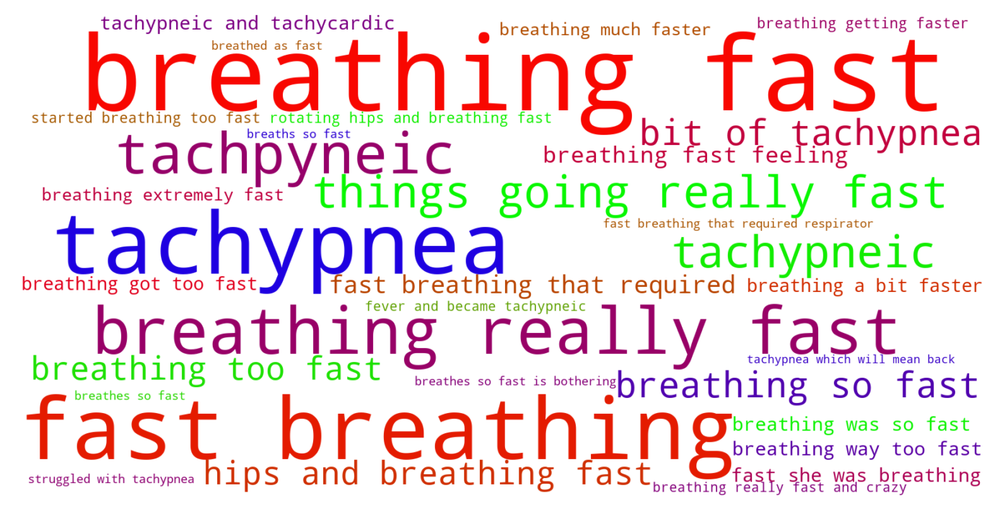
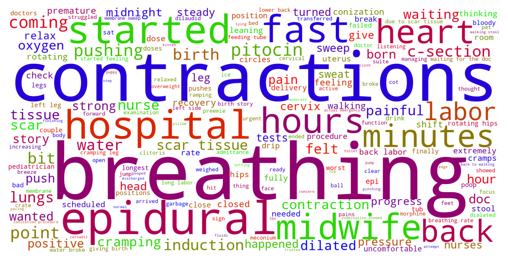

Jump to section:
Samples from Social CorpusHits per UMLS Alias on Social Corpus
Word Cloud Comparison
Embedding Space Comparison
Nearest Neighbors by Semantic Type
Related Analysed Concepts
Samples from Social Corpus
He started breathing too fast , so they took him to the nursery to give him oxygen until he stabilized .
Confidence: 0.681. Reddit link
She's been lying on the ground , breathing fast .
Confidence: 0.929. Reddit link
Tachypnea My 27 + 4 weeker has finally gone into special care after 2 months , but has just gone back into a closed cot and might be going back on CPAP due to a bit of tachypnea which will mean back to the NICU .
Confidence: 0.832. Reddit link
He is on an oxygen , and a feeding tube due to low oxygen / breathing fast .
Confidence: 0.929. Reddit link
About 24 hours after giving birth I spiked a fever and became tachypneic and tachycardic .
Confidence: 0.767. Reddit link
She stayed in the NICU for two weeks on oxygen because of her very fast breathing rate .
Confidence: 1.000. Reddit link
I seriously just breathed as fast as I could during the contractions and enjoyed the shaky lightheaded feeling between them .
Confidence: 0.601. Reddit link
Basically fast breathing that required respirator assistance for a few days to clear the fluid out of his lungs that would have been squeezed out naturally with a longer delivery .
Confidence: 0.651. Reddit link
I thought it was pretty daft but afterwards my wife said it was the only thing she was aware of , and she had no idea how fast she was breathing until I told her to slow down .
Confidence: 0.741. Reddit link
We're very thankful for that , but not knowing why our daughter breathes so fast is bothering us .
Confidence: 0.641. Reddit link
Hits per UMLS Alias on Social Corpus
-
fast breathing
33 hits
-
tachypnea
6 hits
-
tachypneic
5 hits
-
tachypneas
0 hits
-
rapid breathing
0 hits
-
respiratory rate increased
0 hits
-
polypnea
0 hits
-
tachypnoea
0 hits
-
rate respiration increased
0 hits
-
rapid respiration
0 hits
-
increased respiratory rate
0 hits
-
respiration rate increased
0 hits
-
rapid respirations
0 hits
-
tachypnoeic
0 hits
-
tachypnea finding
0 hits
Word Cloud Comparison
Keywords matching C0231835
Keywords matched against concept. Word size represents frequency.
Keywords co-occurring with C0231835
Co-occurrence is measured at the document-level (i.e. Reddit submissions). Frequencies are normalized to account for keywords common to all CUIs.
Embedding Space Comparison
T-SNE comparison for word embeddings learned from medical domain (EuroPMC) and social media (Reddit) independently.
Pearson correlation for union of closest 1000 neighbors: 0.025
Nearest Neighbors by Semantic Type
Most similar concepts in each of the selected UMLS semantic types. Based on concept embeddings from social corpus.
T184 (Sign or Symptom)
-
C0003578
Apnea
0.802 Similarity
-
C0242706
Oxygen stress breathing
0.763 Similarity
-
C0553668
Breathing labor
0.762 Similarity
-
C0423729
Breathing pain
0.750 Similarity
-
C0221161
Breathing shallow
0.730 Similarity
-
C0013404
Trouble breathing
0.710 Similarity
-
C0476273
Respiratory distress
0.695 Similarity
-
C0424805
Breathing symptoms
0.683 Similarity
T061 (Therapeutic or Preventive Procedure)
-
C0554804
Assisted breathing
0.770 Similarity
-
C0021459
Breathing treatments
0.741 Similarity
-
C0454508
Breathing control
0.719 Similarity
-
C0006155
Breathing exercises
0.712 Similarity
-
C0454510
Relaxed breathing
0.707 Similarity
-
C0237085
Relaxation breathing techniques
0.659 Similarity
-
C0020674
Hypothermia induced
0.644 Similarity
-
C1563236
Still treatment
0.635 Similarity
T039 (Physiologic Function)
-
C1456599
Lungs breathing
0.764 Similarity
-
C0035203
Ventilation
0.724 Similarity
-
C0035245
Lung function
0.509 Similarity
-
C0234451
S sleep
0.497 Similarity
-
C0423556
Light pressure touch
0.487 Similarity
-
C3179159
Sedative effects
0.481 Similarity
-
C0005775
Circulation
0.479 Similarity
-
C0599423
Joint stress
0.469 Similarity
T074 (Medical Device)
-
C0184106
Breathing tube
0.762 Similarity
-
C0179419
Breathing bag
0.751 Similarity
-
C0462877
Oxygen giving set
0.654 Similarity
-
C0492230
Support breathing tube
0.653 Similarity
-
C3696780
Tube oxygen
0.626 Similarity
-
C0182109
Pulse oximeter
0.610 Similarity
-
C0042497
Respirator
0.605 Similarity
-
C0030067
Oxygenator
0.600 Similarity
T042 (Organ or Tissue Function)
-
C0043229
Breathing work
0.752 Similarity
-
C0231940
Oxygenation
0.621 Similarity
-
C1160388
Respiratory tube development
0.613 Similarity
-
C0042396
Vasospasm
0.511 Similarity
-
C4250378
Neural induction
0.485 Similarity
-
C0005778
Clotting
0.484 Similarity
-
C0034929
Reflex
0.483 Similarity
-
C1959585
Heart rate control
0.477 Similarity
T046 (Pathologic Function)
-
C3203358
Under breathing
0.735 Similarity
-
C0242184
Decreased oxygen supply
0.680 Similarity
-
C0034063
Pulmonary edema
0.673 Similarity
-
C4075684
Hypoxemia during surgery
0.668 Similarity
-
C0269810
Sepsis during labor
0.662 Similarity
-
C0034065
Pulmonary embolism
0.631 Similarity
-
C0020542
Pulmonary hypertension
0.618 Similarity
-
C0004144
Collapsed lung
0.603 Similarity
T201 (Clinical Attribute)
-
C0035234
Breathing sound
0.733 Similarity
-
C0231832
Breathing rate
0.723 Similarity
-
C0429622
Oxygen supply
0.649 Similarity
-
C0521982
Successful treatment
0.534 Similarity
-
C1285995
Measure uterine contractions
0.503 Similarity
-
C0233131
Intensity uterine contraction
0.484 Similarity
-
C0007165
Heart output
0.483 Similarity
-
C0005850
Blood volume
0.481 Similarity
T032 (Organism Attribute)
-
C0805393
Breathing spontaneous
0.692 Similarity
-
C0949285
Antibiotic resistance
0.493 Similarity
-
C0005612
Weight baby
0.489 Similarity
-
C0575118
Normal posture
0.482 Similarity
-
C0017504
Gestational age
0.454 Similarity
-
C0005902
Body surface area
0.443 Similarity
-
C1443333
Squatting body position
0.442 Similarity
-
C3714565
Physical condition
0.441 Similarity
T023 (Body Part, Organ, or Organ Component)
-
C0024109
Lung
0.672 Similarity
-
C0225730
Left lung
0.654 Similarity
-
C0034086
Pulmonary valve
0.613 Similarity
-
C0034052
Pulmonary arteries
0.610 Similarity
-
C0023078
Larynx
0.594 Similarity
-
C1268107
Lung part
0.585 Similarity
-
C0040578
Trachea
0.558 Similarity
-
C0018787
Heart
0.539 Similarity
T047 (Disease or Syndrome)
-
C0033036
Atrial premature contractions
0.668 Similarity
-
C0037315
Sleep apnea
0.632 Similarity
-
C0159020
Fits newborn
0.631 Similarity
-
C0152078
Pelvic pressure syndrome
0.624 Similarity
-
C0036690
Sepsis
0.623 Similarity
-
C0520679
Obstructive sleep apnea
0.617 Similarity
-
C0340470
Incessant atrial tachycardia
0.616 Similarity
-
C0032326
Pneumothorax
0.614 Similarity
T044 (Molecular Function)
-
C0369768
Oxygen saturation
0.622 Similarity
-
C0887940
Gene arrangements
0.417 Similarity
-
C1149397
Heartless ligand
0.388 Similarity
-
C1749457
Ligands activity
0.385 Similarity
-
C1152025
Docs
0.377 Similarity
-
C1752422
Wing hair outgrowth
0.364 Similarity
-
C1150342
Dopachrome rearranging enzyme
0.351 Similarity
-
C0086321
Cycle futile
0.342 Similarity
T031 (Body Substance)
-
C0225379
Upper respiratory fluid
0.611 Similarity
-
C0225386
Breath
0.574 Similarity
-
C0370199
Aspirate
0.548 Similarity
-
C0162371
Cord blood
0.533 Similarity
-
C0007806
Spinal fluid
0.515 Similarity
-
C1446336
Multiple plaques
0.496 Similarity
-
C1253943
Fluid chest
0.495 Similarity
-
C0238626
Amniotic meconium
0.454 Similarity
T019 (Congenital Abnormality)
-
C0264303
Laryngomalacia
0.589 Similarity
-
C0265783
Underdeveloped lung
0.581 Similarity
-
C0332941
Corrected transposition
0.565 Similarity
-
C0000768
Birth defect
0.559 Similarity
-
C0432185
Absent muscles since birth
0.552 Similarity
-
C0266449
Brain malformation
0.541 Similarity
-
C0027794
Neural tube defect
0.533 Similarity
-
C0149530
Congenital heart block
0.528 Similarity
T048 (Mental or Behavioral Dysfunction)
-
C0038436
Ptsd
0.578 Similarity
-
C0424332
Breathhold
0.551 Similarity
-
C0393760
Trouble falling asleep
0.540 Similarity
-
C0522187
Fear childbirth
0.527 Similarity
-
C0338927
Hospitalism
0.526 Similarity
-
C2063866
Depression therapy resistant
0.518 Similarity
-
C0038441
Stress disorder
0.515 Similarity
-
C0563172
Dangerous plans
0.511 Similarity
T037 (Injury or Poisoning)
-
C0269858
Traumatic lesion during delivery
0.575 Similarity
-
C0005604
Traumatic birth
0.559 Similarity
-
C0417108
Jump from burning hospital
0.549 Similarity
-
C0876926
Traumatic brain damage
0.533 Similarity
-
C1959898
Traumatic injury during pregnancy
0.533 Similarity
-
C0043250
Wound
0.531 Similarity
-
C0730592
Vulval tear during delivery
0.510 Similarity
-
C0026771
Wound multiple
0.507 Similarity
T190 (Anatomical Abnormality)
-
C0016169
Sinus
0.564 Similarity
-
C4025734
Anomaly scalp
0.529 Similarity
-
C0266785
Umbilical cord issue
0.515 Similarity
-
C0019294
Inguinal hernia
0.505 Similarity
-
C4703723
Muscle issues back
0.453 Similarity
-
C0266788
Marginal cord insertion
0.446 Similarity
-
C3887590
Stricture ureter
0.440 Similarity
-
C4025319
Head stopped growing
0.438 Similarity
T005 (Virus)
-
C0597404
Respiratory virus
0.564 Similarity
-
C3743464
Mycobacteriophage whirlwind
0.532 Similarity
-
C3768023
Mycobacteriophage conspiracy
0.445 Similarity
-
C0035236
Rsv
0.429 Similarity
-
C0205939
Cold virus common
0.405 Similarity
-
C4415400
Phage wrath
0.404 Similarity
-
C5058350
Fairfax lookout virus
0.360 Similarity
-
C1024667
Gadgets gully virus
0.349 Similarity
T060 (Diagnostic Procedure)
-
C0150496
Heart monitoring
0.560 Similarity
-
C0162701
Sleep study
0.541 Similarity
-
C0033053
Prenatal diagnoses
0.537 Similarity
-
C0042793
Vision test
0.509 Similarity
-
C0013798
Ekg
0.508 Similarity
-
C0024119
Function tests lung
0.506 Similarity
-
C0596473
Detection early
0.503 Similarity
-
C0007208
Cardiotocography
0.501 Similarity
T049 (Cell or Molecular Dysfunction)
-
C4725191
Stop lost
0.555 Similarity
-
C0544885
Stop gain
0.457 Similarity
-
C1705285
Mutated
0.384 Similarity
-
C0008625
Chromosomal abnormality
0.354 Similarity
-
C0021943
Inversion
0.353 Similarity
-
C0002938
Aneuploidy
0.342 Similarity
-
C0008628
Del
0.341 Similarity
-
C4725190
Start lost
0.331 Similarity
T100 (Age Group)
-
C3494262
Extremely preterm infant
0.537 Similarity
-
C0021289
Newborn
0.536 Similarity
-
C4551581
Full term baby
0.482 Similarity
-
C4048294
Preterm baby
0.465 Similarity
-
C0682054
Mature adult
0.395 Similarity
-
C0021270
Baby
0.387 Similarity
-
C0008059
Child
0.331 Similarity
-
C0205653
Teenager
0.320 Similarity
T079 (Temporal Concept)
-
C2985337
Relaxation time between uterine contractions
0.536 Similarity
-
C0022872
Second stage labour
0.533 Similarity
-
C1550731
Week continuous
0.527 Similarity
-
C0032790
After surgery
0.517 Similarity
-
C3494202
Time treatment
0.516 Similarity
-
C5204315
Time second temperature
0.511 Similarity
-
C0439588
Acute chronic
0.506 Similarity
-
C0587116
During sleep
0.497 Similarity
T200 (Clinical Drug)
-
C3218395
Papain pill
0.523 Similarity
-
C0723917
Triple antibiotic ointment
0.447 Similarity
-
C0599396
Sleeping pills
0.438 Similarity
-
C1163679
Injections sterile water
0.429 Similarity
-
C0307304
Pitocin injection
0.418 Similarity
-
C4048176
Oxytocin injection
0.404 Similarity
-
C0718788
Baby oil top
0.367 Similarity
-
C0678431
Cough syrup
0.361 Similarity
T018 (Embryonic Structure)
-
C0041637
Umbilical vein
0.515 Similarity
-
C0440731
Fetal brain
0.508 Similarity
-
C0553522
Cord placenta umbilical
0.503 Similarity
-
C0041632
Umbilical artery
0.496 Similarity
-
C0231024
Neural tube
0.496 Similarity
-
C0041633
Umbilical cord
0.475 Similarity
-
C1278988
Entire placenta
0.426 Similarity
-
C1284022
Trilaminar disc
0.416 Similarity
T101 (Patient or Disabled Group)
-
C0682161
Dually diagnosed
0.514 Similarity
-
C0008098
Child hospitalized
0.466 Similarity
-
C0233363
Monoamniotic twins
0.463 Similarity
-
C4727511
Women who have mastectomy
0.457 Similarity
-
C0871503
Dying patients
0.452 Similarity
-
C0683995
Drug exposed child
0.429 Similarity
-
C1516213
Cancer patient
0.429 Similarity
-
C0029921
Outpatient
0.424 Similarity
T041 (Mental Process)
-
C0004056
Aspirations
0.508 Similarity
-
C0009647
Conditioned
0.498 Similarity
-
C0175631
Visualization
0.496 Similarity
-
C0871504
Test anxiety
0.477 Similarity
-
C1443086
Alertness
0.467 Similarity
-
C0870135
Anger control
0.461 Similarity
-
C0017324
Generalization
0.460 Similarity
-
C0424157
Fear going crazy
0.449 Similarity
T034 (Laboratory or Test Result)
-
C0580944
Lying blood pressure
0.503 Similarity
-
C0580945
Blood pressure standing
0.500 Similarity
-
C0580946
Sitting blood pressure
0.474 Similarity
-
C5201036
Low platelets
0.465 Similarity
-
C0588465
Sperm forward progression
0.448 Similarity
-
C0149687
Failed hearing test
0.441 Similarity
-
C2266672
Clotting time finding
0.433 Similarity
-
C5206315
Nse positive
0.426 Similarity
T054 (Social Behavior)
-
C0582101
Talking about dying
0.503 Similarity
-
C0679426
Incompatibility
0.470 Similarity
-
C0282657
Infibulations
0.458 Similarity
-
C4505276
Body pushing
0.457 Similarity
-
C0018896
Assistance
0.439 Similarity
-
C0030209
Bonds pair
0.437 Similarity
-
C1261512
Attack
0.436 Similarity
-
C0871858
Pragmatic
0.432 Similarity
T067 (Phenomenon or Process)
-
C1947910
Pulsed
0.500 Similarity
-
C0042491
Air ventilation
0.481 Similarity
-
C0677038
Increase pressure
0.465 Similarity
-
C0337240
Fall while being carried
0.458 Similarity
-
C0023983
Long term effects
0.450 Similarity
-
C0458142
Laser light
0.442 Similarity
-
C0234402
Stimulus
0.428 Similarity
-
C0563547
Pressure change
0.427 Similarity
T059 (Laboratory Procedure)
-
C4744894
Wake after sleep onset
0.492 Similarity
-
C0368930
Clotting time
0.482 Similarity
-
C0871511
Testing methods
0.481 Similarity
-
C1293120
Sounding
0.481 Similarity
-
C0545131
Cbc diff
0.471 Similarity
-
C0018941
Blood test
0.466 Similarity
-
C0162676
Emit
0.458 Similarity
-
C0014772
Counting rbc
0.457 Similarity
T195 (Antibiotic)
-
C0003232
Antibiotics
0.463 Similarity
-
C0723285
Septa
0.431 Similarity
-
C0013090
Doxycycline
0.426 Similarity
-
C0718575
Antibiotics ear
0.419 Similarity
-
C0002645
Amoxicillin
0.375 Similarity
-
C0279516
Antibacterial
0.361 Similarity
-
C0030842
Penicillin
0.339 Similarity
-
C1564058
Roxi basics
0.307 Similarity
T007 (Bacterium)
-
C0018154
Gram positive bacteria
0.383 Similarity
-
C0022828
L forms
0.362 Similarity
-
C3801085
Enorma
0.361 Similarity
-
C0579233
Group b strep
0.356 Similarity
-
C1015849
Wigglesworthia
0.349 Similarity
-
C3137302
Brownia
0.331 Similarity
-
C2312288
Sharpea
0.328 Similarity
-
C0995705
Frankia
0.326 Similarity